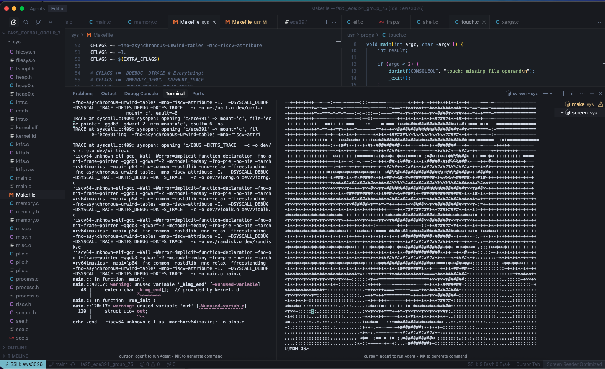

UNIX-Like RISC-V Operating System Kernel
Implemented a teaching OS kernel with process creation, ELF loading, system calls, virtual memory, Copy-on-Write fork, and VirtIO-backed persistent storage support.
Overview
This course project focused on implementing a small UNIX-like operating system kernel on RISC-V. The goal was to understand how core operating-system abstractions are realized in a real kernel, including process management, privilege separation, executable loading, memory isolation, and persistent storage access.
The kernel supported process creation, ELF loading, system calls, and a user-level shell, while maintaining separation between kernel mode and user mode. A major part of the work involved trap handling and the low-level control flow needed to move safely between user programs and kernel services on the RISC-V architecture.
The memory subsystem included page-table management, virtual memory, page faults, and a Copy-on-Write implementation for `fork`, allowing process duplication to be handled more efficiently. The kernel also integrated VirtIO block-device support for persistent storage. Taken together, the project provided a systems-level view of how operating system design decisions connect architecture, memory management, and process execution in a working kernel.
